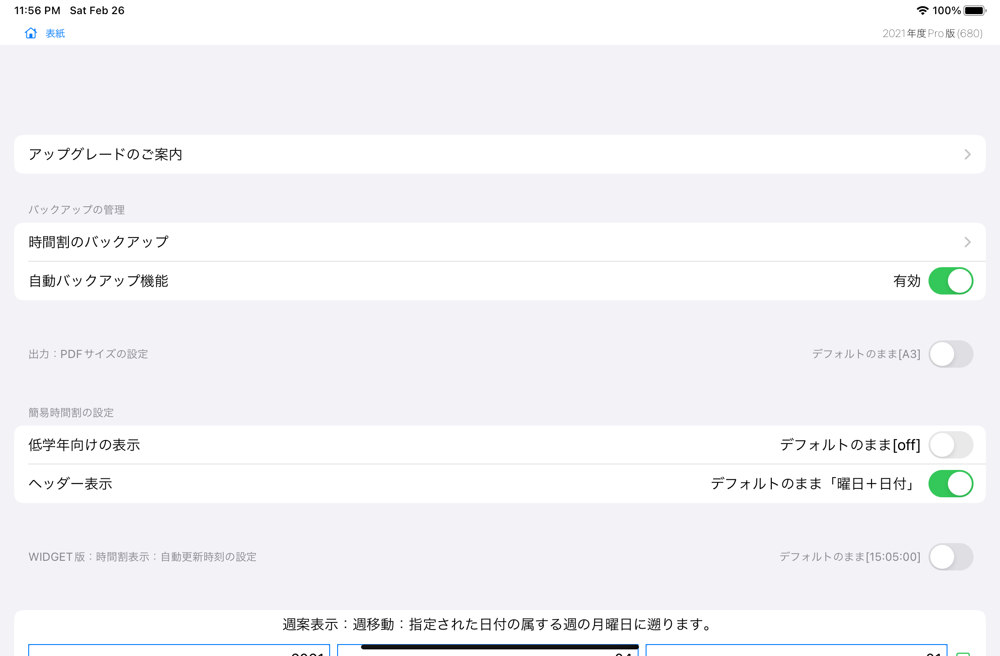

サポート
support
Class Schedule For Teacher 「せんせいの時間割」について
このアプリケーションは、
週案作成、時数集計・分数表示、年間集計など 小中学校の先生のご利用を想定した便利な道具です。
簡単に週案を作成・印刷できます。
週案作成と同時に連動して、時数を自動集計し、週次・月次・年次集計が確認できます。
年度途中からでも、ご利用できます。
事務作業時間を短縮し、 繰り返される定型作業のストレスを軽減！
しっかり作成、サクッと提出！
もちろん、急な変更の時も、頼りになります。
先生の本来業務を邪魔されたくない、
先生の事務作業をもっと簡単・軽量にしたい、
そういった先生方の現場の声に応えることのできるアプリになりたい、
そのような願いを込めて、開発されています。
【最新情報】
・「せんせいの時間割」説明資料(Ver.1.0)がリリースされました。こちらからダウンロードできます
・「せんせいの時間割」アプリケーションVer.6.7.0がリリースされました。
【主な機能】※Pro版機能を含みます。
・メモ入力機能(曜日毎のメモ欄、振返欄、助言欄、持ち物欄）
・時間割編集機能（各コマの単元名入力、教科選択、教科一括入力・削除）
・年次、月次、週次の集計機能、年次集計期間カスタマイズ機能
・印刷機能(週案、年表、生徒向け簡易時間割)
・出力機能(pdfで送信)
・バックアップ機能
【制限】
1.iPad横向き画面でのご利用を推奨いたします。
2.日曜日は、入力できません。年度末の週の入力はできません。
3.各日最大６コマまで入力できます。
4.次に示す教科が初期設定されています。
国語、算数、理科、生活、社会、音楽、生活、学活、行事、総合、体育、図工、家庭、委員会、英語、道徳、クラブ
5.AirPrintに対応したプリンタへの印刷が可能です。
使い方
1.表紙画面にある「週案」をタップして、週案画面を表示します。
2.必要に応じ、「前週」「今週」「次週」をタップして、入力したい週を表示します。
3.入力したいコマをタップして、画面右もしくは画面下に表示されるツールバーを利用し、作成していきます。選択されたコマを再タップし、選択解除できます。（複数選択可能）
3-1.教科を一括で入力する。入力したいコマ（複数選択可）をタップし、画面右ツールバーにある教科アイコンをタップします。
3-2.教科を一括で削除する。入力したいコマ（複数選択可）をタップし、画面下ツールバーにある「削除」をタップします。
3-3.コマを編集する。編集したいコマ（複数選択可）をタップし、画面下ツールバーにある「編集」をタップします。
3-4.コマを入替える。入替えたいコマを２個タップし、画面下ツールバーにある「入替」をタップします。
4.メニューバーにある「印刷」をタップして、プリンタを選択し、週案を印刷します。
5.メニューバーにある「表紙」をタップして、表紙画面を表示します。次に、「年表」をタップして、年表画面を表示します。
各画面の説明
表紙画面

週案画面

年表画面

設定画面

ツールバー

教科一括削除

一括編集

先週から複写

週案を作成したい
入力したい「コマ」をタップし、選択する。再タップで、選択解除する。
教科を選択する。入力アイコンをタップし、単元名などを入力する。「チェック」をタップし、教科メモを確定します。
時数計算結果を確認したい
表紙画面にある「週案」をタップし、週案画面を表示します。週案作成と同時に自動集計された時数が表示されています。
表紙画面にある「年表」をタップし、年表画面を表示します。各月集計、年度集計を確認します。
生徒向け簡易時間割を作成したい
表紙画面にある「簡易時間割」をタップし、簡易時間割画面を表示します。週案作成と同時に作成された簡易時間割が表示されています。
持ち物欄をタップし、持ち物を入力します。「入力終了」をタップし、入力内容を確定します。
「印刷」をタップし、印刷します。「出力」をタップし、直接送信します。
バックアップをしたい
表紙画面にある「設定」をタップし、設定画面を表示します。
自動バックアップ機能の右にあるスイッチをタップし、有効にします。表紙画面へ戻る度にバックアップがiCloudへ保存されます。

iPadからiPhoneへデータを連携させたい※あらかじめiPad側で自動バックアップ機能を有効にしておきます。
表紙画面にある「設定」をタップし、設定画面を表示します。
時間割のバッ クアップをタップし、バックアップ管理画面を表示します。
連動したい日時のファイル名の右側にある「復元」をタップし、「対象マスタの指定」画面を表示します。
対象マスタの指定をすべてオンにし、右上にある「今すぐ復元」をタップします。
◎◎◎学校の事務作業をお手伝い◎◎◎
週案の作成・集計・印刷・保存
・・・メールで送信！
・・・AirPrintで印刷！
・・・AppleWatchで時間割チェック！
さらに、
オールオプション(Pro版)サブスクリプションご購入で、
毎日の持ち物メモ欄が付いた
生徒さん向け簡易時間割出力が可能です。
その週だけの時間割の変更の周知に是非ご活用ください。
↓↓↓お試しできます↓↓↓
１ヶ月お試し期間あり
「オールオプション」サブスクリプション
ーーー先生をサポートするアプリーーー
「せんせいの時間割」
ーーーーーーーーーーーーーーーーーー
このアプリケーションは、事務作業を支援する道具です。
小学校の先生のご利用を想定しています。
毎日の時間割を入力し、各教科の時間数を自動集計します。
週案に教科名を配置するだけで、時数がリアルタイムで自動集計されます。
年度途中からの利用も可能です！
【機能】
・曜日メモ入力機能
・定型入力機能
・時間割入力機能
- 分数入力
- 教科一括入力[Pro版のみ]
・年次、月次、週次の集計機能
- リアルタイム表示
- 分数表記のまま集計
- 年次集計期間のカスタマイズ[Pro版のみ]
・印刷機能、PDF出力機能
- 生徒さん向け簡易時間割の出力[Pro版のみ]
・Widget対応
- 直近の予定時間割を表示※一度アプリ本体を起動すると変更が反映されます
・時間割クラウドバックアップ機能
- 今すぐバックアップ
- iPad、iPhoneの間で、バックアップデータをiCloud経由で共有可能です
・AppleWatch対応
- 最新のバックアップデータ(手動取得)から、その日の時間割を表示します
【制限】
1.日曜日は、入力できません。
2.各日最大６コマまで入力できます。
3.次に示す教科が初期設定されています。
国語、算数、理科、生活、社会、音楽、生活、学活、行事、総合、体育、図工、家庭、委員会、英語、道徳、クラブ
4.AirPrint対応プリンタへの印刷が可能です。印刷時は、事前にダークモード解除をお願いいたします。
5.集計機能の対象となる期間は、2021年度版では、2021年4月から2022年3月までです。年度フリー版は、年度に応じ、スライドいたします。
6.週案の予定欄と実施欄の集計結果は同値となります。
7.入力されたメモは、一部しか表示(及び印刷)されない場合がございます。
8.iPadでのご利用をおすすめいたします。
9.iPhoneや小さい画面の機種をご利用の場合、表示が欠ける等、一部機能に制限がある場合がございます。
10.AppleWatch版とWidget版での時間割表示は、当日、もしくは土曜日、日曜日に時間割の設定がない場合、翌週月曜日の時間割を表示します。また、6時間目終了(15:05)以降は、翌日の時間割を表示します。時間割が変更された場合、リアルタイムで反映されません。
11.当該週が年度をまたぐ週の場合、当日の属する週の月曜日の年度を自動判定し、当該年度の集計を行います。
(年度をまたぐ週の取扱い)
・週時数の集計は、次年度を含む当該週の合計となります。
・累計の集計は、次年度を含まない年度最終日までの合計となります。
【サブスクリプションの仕組み】
- 通常機能は無料でご利用できます。
- Ｐｒｏ版サブスクリプションへいつでもアップグレードできます。
- サブスクリプションを購入すると、Ｐｒｏ版の機能を利用できるようになります。
- ご利用のサブスクリプションは、現在のサブスクリプション期間が終了する 24 時間前までに自動更新の設定がオフにされない限り、自動的に更新されます。
- 現在のサブスクリプション期間が終了する 24 時間前に、アカウントに対して更新料金が請求されます。
- 無料トライアル期間の未使用分 (存在する場合) は、ユーザーがそのサービスのサブスクリプションを購入した時点で放棄したことになります。
- サブスクリプションはユーザーが管理することができ、自動更新は購入後にユーザーのアカウント設定からオフにできます。
- サブスクリプションは iTunes アカウントに紐付けられており、お持ちの iOS デバイスで利用できます。
- お支払いは購入確定時に iTunes アカウントに対して課金されます。
- サブスクリプションは、有効期間中に取り消すことはできません。
【開発者より】
使いやすいアプリNo.1を目標に
このアプリが、全国の小学校で利用されることを目指して、開発を進めています。
「先生の相棒アプリ」と呼ばれたい、そんな想いを込めて、
ご利用者のご要望を定期的に拝見し、
実現可能なものを順番にできるだけ反映していく方針(予定)です。
どうぞよろしくお願いいたします。
ご評価＆レビューお待ちいたしております。
【バックアップ方法のご案内】
お手数ですが、こまめなバックアップをお願いします。
(iCloud経由の場合)
設定 ＞ 時間割のバックアップ ＞ ＋ ＞ 今すぐバックアップ
(iCloudを経由しない場合のデータ連携方法)
1.週案データのエクスポート
設定＞高度な設定＞データ入出力＞「週案データのエクスポート」タップ
↓
画面にデータが表示されたら、・・・
↓
テキスト出力＞タイトル入力例「日付＋週案データ」→メモ帳などに保存
2.日次集計データのエクスポート
設定＞高度な設定＞データ入出力＞「日次集計データのエクスポート」タップ
↓
画面にデータが表示されたら、・・・
↓
テキスト出力＞タイトル入力例「日付＋週案データ」→メモ帳などに保存
3.週案データのインポート
メモ帳などにエクスポートされた週案データを編集し、テキストを全選択コピー
↓
設定＞高度な設定＞データ入出力
コピーしてきたテキストを入力欄にペースト
↓
「週案データのインポート」タップ
4.日次集計データのインポート
メモ帳などにエクスポートされた週案データを編集し、テキストを全選択コピー
↓
設定＞高度な設定＞データ入出力
コピーしてきたテキストを入力欄にペースト
↓
「日次集計データのインポート」タップ